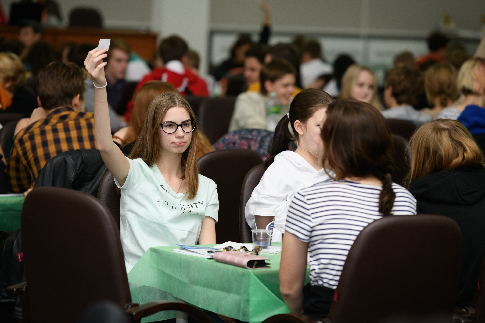
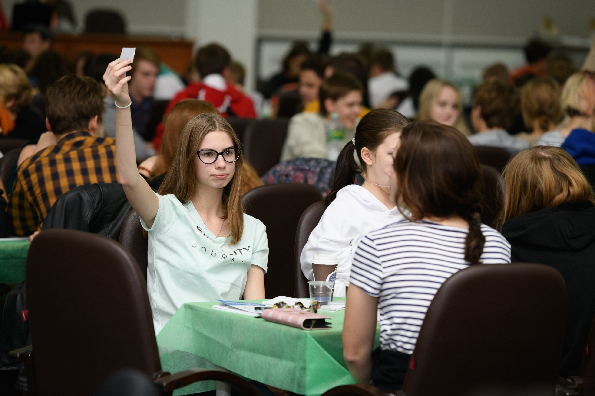

Метод Тыка
Сборная Город Самара, Самарская областьВ далеком 2017 учитель истории и, как выяснилось через некоторое время, лучший тренер ЧГК этого мира предложил нам поучаствовать в каком-то мутном интеллектуальном марафоне. Мы не поняли, как устроена эта игра и что нужно делать, но так сформировалась наша команда (тогда под названием «Vita»).
5 лет мы превращаем любой турнир в пикник, а игровой стол в обеденный. 5 лет мы требуем плитку шоколада перед каждым туром, даже если их 10, у лучшего тренера этого мира (Вы можете познакомиться с ним ниже). 5 лет мы играем, используя наш главный метод - Метод Тыка.
"Что?Где?Когда?" - 3 МЕСТО 3-й Самарский фестиваль Интеллектуальных игр "СФИнкс" Конкурс "Песневед" - 3 МЕСТО Конкурс "Медиа-азбука" - 1 МЕСТО 13-й асинхронный турнир по игре "Что?Где? Когда?" "Золотая осень" - 2 МЕСТО 5-й Регулярный Чемпионат по игре "Что? Где? Когда?" среди учащихся общеобразовательных учреждений г.о.Самара Молодежный Кубок Мира Турнир «Молот Тора»
Cтаршие школьники
Турнир "Интеллектуальное многоборье" - 2 МЕСТО СРЕДИ СТУДЕНТОВ*
Турнир "Блиц-марафон"- 3 МЕСТО СРЕДИ СТУДЕНТОВ*
*состав временно изменился и команда автоматически перешла в категорию "Студенты" Молодежный Кубок Мира Турнир «Молот Тора» Брейн-ринг по Самаре состоится 16 апреля
Внешкольный зачет
Общий зачёт по игре "Что? Где? Когда?" - 1 МЕСТО
Общий зачет смены - 2 МЕСТО Летняя смена "Интеллект" 2019 год Турнир по игре "Брейн-ринг" - 3 МЕСТО Летняя смена "Интеллект" 2018 год Городская профильная зимняя смена "Зимний Интеллектуальный Марафон"
 Всероссийский тематический турнир "Мир вокруг нас"
Всероссийский тематический турнир "Мир вокруг нас" Летняя смена "Интеллект" 2018 год
Летняя смена "Интеллект" 2018 год Городская профильная зимняя смена "Зимний Интеллектуальный Марафон"
Городская профильная зимняя смена "Зимний Интеллектуальный Марафон" 
 
Мы долго не могли определиться, в каком формате рассказать о нашей команде, но единогласно приняли решение: сайт - самая крутая реализация. За время создания мы стали и веб-дизайнерами, и верстальщиками, и креативными менеджерами, и генераторами мемов.
Этот своеобразный проект - наш первый опыт,и самостоятельно справиться с таким объёмом работ было бы проблематично, поэтому к нам на помощь пришёл тот самый временный участник «Метода Тыка» (см. Достижения - Старшие школьники - "Бауманиада")
ПОЧЕМУ МЫ?
• С первого года игры в ЧГК мы становились призёрами и победителями. Даже в студенческом зачёте на Бауманиаде нам удалось занять призовые места, хотя большинство членов команды - ученики 11 класса
• Несмотря на то, что последний сезон мы играли в составе 3-4, а не 6, как обычно, человек, результаты команды становились только лучше. Готовиться к экзаменам и активно принимать участие в турнирах довольно непросто, но это не помешало нам попасть хотя бы в лист ожидания финала ШЧР
• «Что? Где? Когда?» для нас - это не просто дополнение к школе, ведь мы играем в интеллектуальные игры и летом, и в зимние каникулы, приезжая на профильные смены
• Мы поднимаем настроение каждому, кто сидит недалеко от нас на любом фестивале или турнире. В том числе и комиссии, принимающей ответы на вопросы, которые мы по какой-то причине не поняли…
• Наш тренер - Евгений Михайлович - настоящий профессионал своего дела: каждая из команд, которую он ведёт ( Метод Тыка , ЧГСАД, Фейхоа, Кофеманы), из года в год становятся призёрами и победителями серьёзных турниров. Мы бы хотели, чтобы, отпуская в студенческую лигу уже родной ему Метод Тыка , он успел посмотреть на него (нас) в финале
• Финал ШЧР, скорее всего, последний крупный турнир для нашей команды в Школьном зачёте. Мы выпускаемся из 11 класса и очень хотим завершить школьную «карьеру» на яркой ноте и перейти в Лигу Студентов с полной уверенностью в своих силах.Несколько лет мы шли к тому, чтобы попасть на главную игру сезона: сейчас этот шанс достаточно велик и мы стараемся его не упустить
• Мы невероятно старались и приложили много усилий, чтобы создать не обычную презентацию или фотоподборку в документе Word, а удобный и интересный сайт. Так мы попытались максимально ярко и подробно рассказать о нашей команде